Auth
Approved application · approved logoEvery image below is an actual canonical PNG. Open an image for its full resolution. These are authored design scenes, not current-app browser captures.
Create account · weak
signup-weakActions and implementation pointers
Journl · Show password · Create account
apps/web/src/components/auth/sign-in.tsxapps/web/src/components/auth/sign-up.tsxapps/web/src/components/auth/invite-code-form.tsxapps/web/src/components/auth/reset-password.tsx

SHA256 cd53de39c774e8e78714d0e0f50a8cf2e9f9562d471f9159ff826f0a7a1fc20e

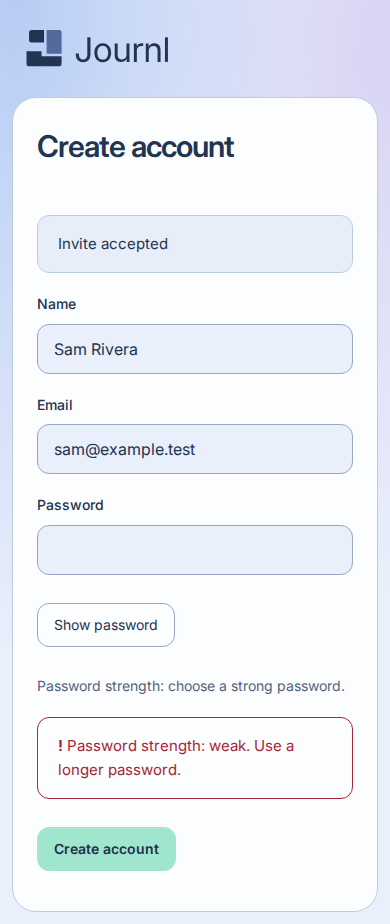
SHA256 96f41ff15efda727fa725ea1cefa6330f6cea8165a01c11ad3665c6d924da493

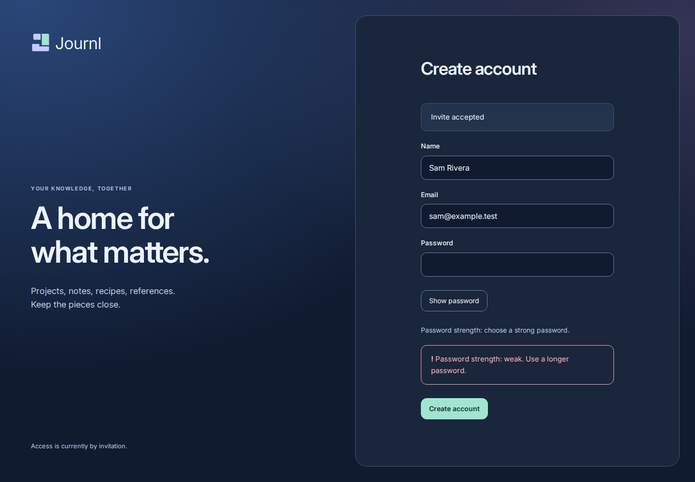
SHA256 9d5d2b8ee799f2ea2fa06ebddf437ffb79a3aa681d894bd474c7a5d8ac76384a

SHA256 7cc0106706162dc22a090945dfa03f6db52b4422d748d554fdee41bee0fb340f
Create account · strength
signup-strengthActions and implementation pointers
Journl · Show password · Create account
apps/web/src/components/auth/sign-in.tsxapps/web/src/components/auth/sign-up.tsxapps/web/src/components/auth/invite-code-form.tsxapps/web/src/components/auth/reset-password.tsx

SHA256 60b3602902031726bcb4de28b9e8d73489e565ac5a1f809ab5418f5b06186e73

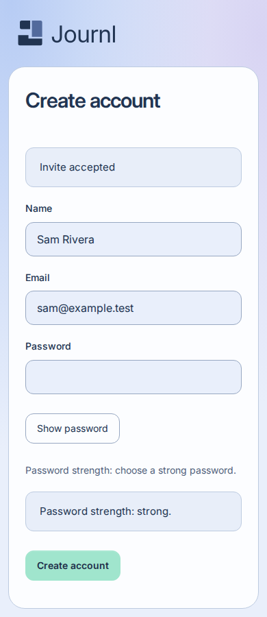
SHA256 ecba0f936f9cf9f3f792fe917b78ee281389785c505e833ab34fd05bfabeac9b

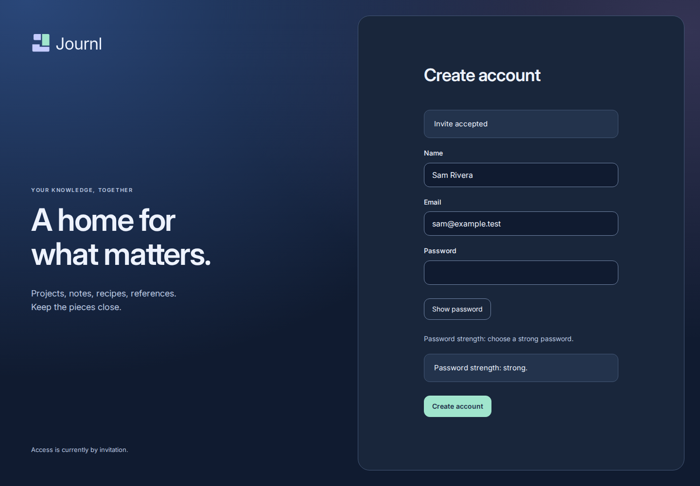
SHA256 b8b438d0ade973d9847827f02f7a9a5a384bb9287526831cae00ca00fc5204ac

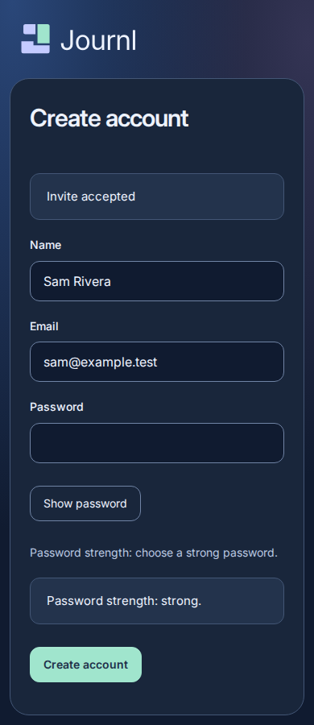
SHA256 5c92323246185250be06344f0cef68e6a6fa99809c8ada113c61132adb3eac89
Create account · busy
signup-busyActions and implementation pointers
Journl · Show password · Create account
apps/web/src/components/auth/sign-in.tsxapps/web/src/components/auth/sign-up.tsxapps/web/src/components/auth/invite-code-form.tsxapps/web/src/components/auth/reset-password.tsx

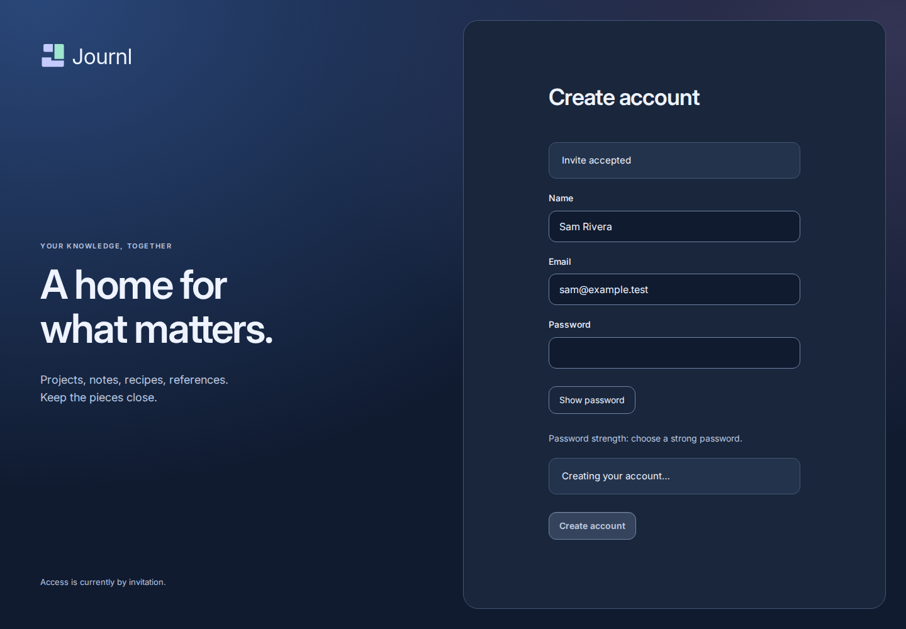
SHA256 2bba6fe5f15e5d9f501534039601dbf6c190ba314a9f99c7cefd1675dd941362

SHA256 c9104954ab4592322c9b0aab7e6f7723775f4dbf107f86a6a53e769de1fd6ac2

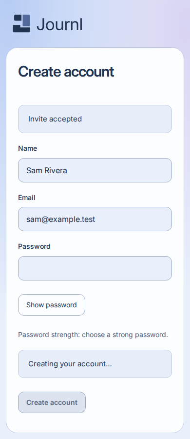
SHA256 8b2d7dc1e5ae92eca4aea388c5210420b1caa0b3e4706971b2b67e7138786512

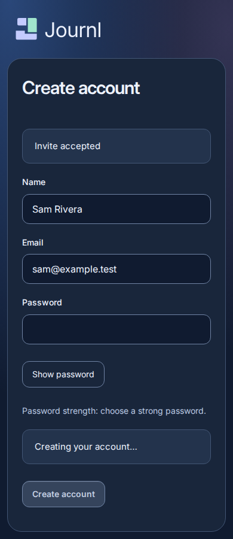
SHA256 0c091e3edfa97c0cf0306794e3fb79df21a5246cf0c790887b1c14219a2b3479
Create account · error
signup-errorActions and implementation pointers
Journl · Show password · Create account
apps/web/src/components/auth/sign-in.tsxapps/web/src/components/auth/sign-up.tsxapps/web/src/components/auth/invite-code-form.tsxapps/web/src/components/auth/reset-password.tsx

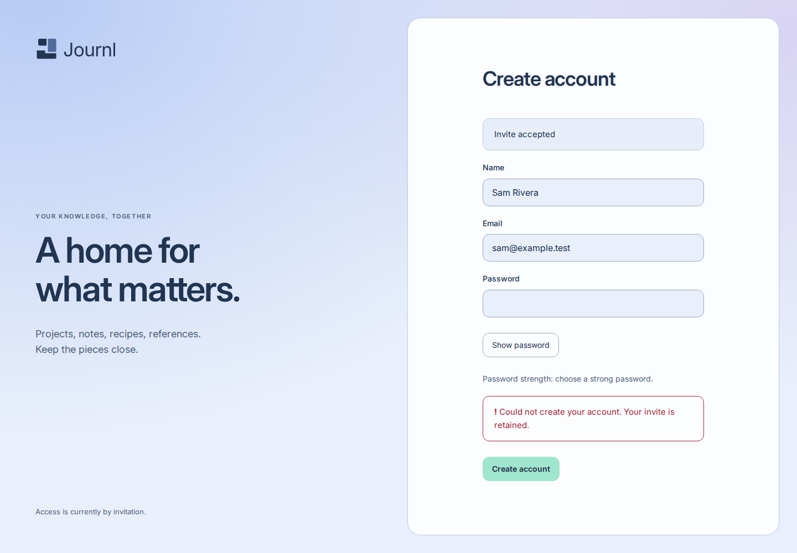
SHA256 bb587bfc8d09d4d99811284dbb02539ef672a0e751a3e0ce5ec1d56ccd286549

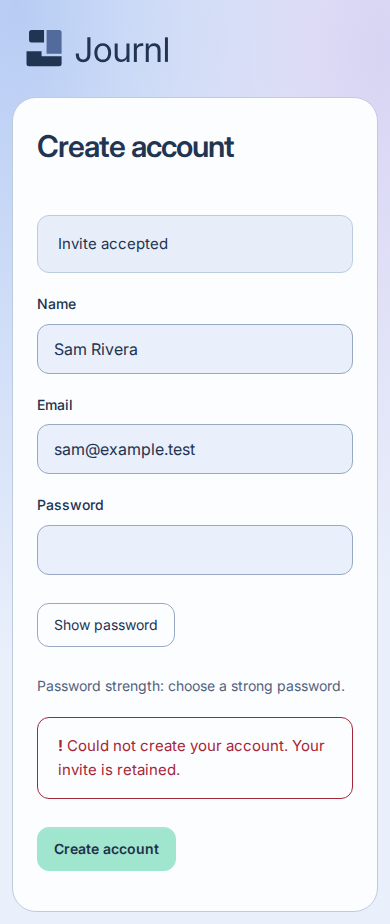
SHA256 dd3a65c3b99caeb72b40182bac1b31a114755c3bb07c1f759aeb3302a5bfc192

SHA256 35fa307095f3d93420109167cbb484bcca1f0db2252232ae2783481448f917ef

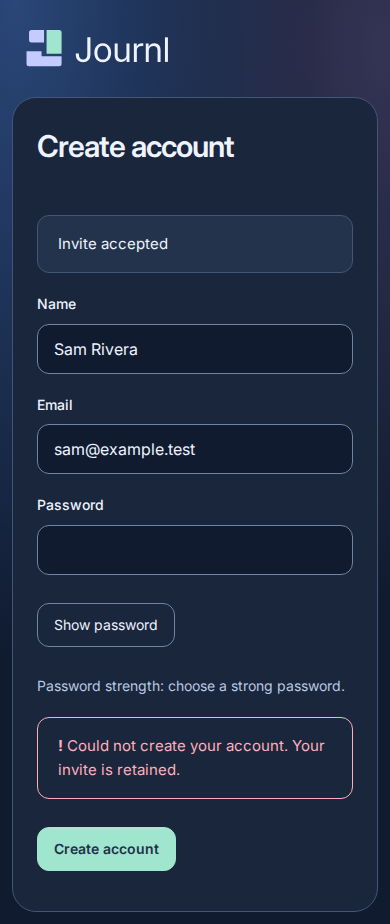
SHA256 cefbe70fb102a58cc3cf9cf0cab5c698d4327f6e6b74b289509b2f11696bf1a2
Create account · intercepted dialog
signup-modalActions and implementation pointers
× · Show password · Close · Create account
apps/web/src/components/auth/sign-in.tsxapps/web/src/components/auth/sign-up.tsxapps/web/src/components/auth/invite-code-form.tsxapps/web/src/components/auth/reset-password.tsx

SHA256 19441597fe559db18fc35533157902d09c712e6acecdb8365a9d8d6a4a412fa6

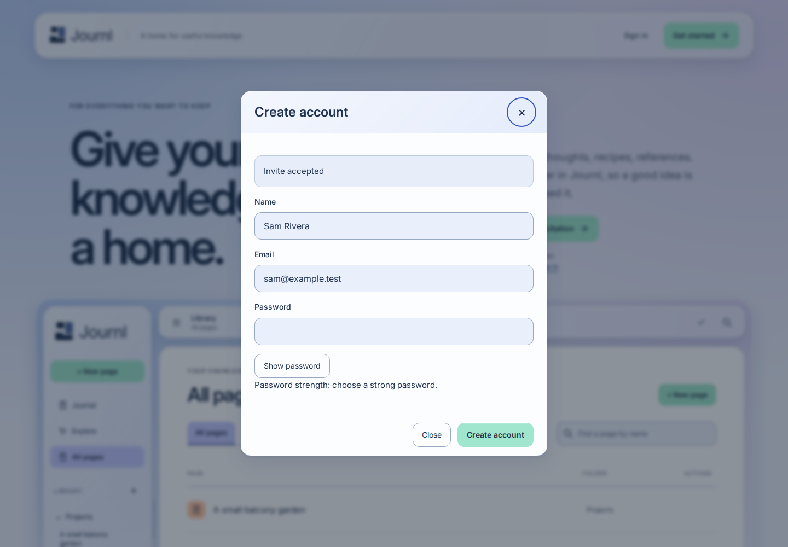
SHA256 606a81978ae6ad59c5e8631a4c1b8c09a0cb9b27db2ae536a9c8951950acf982

SHA256 452d146b765ae4e3d31b5fec6b7c3a41df46a21695cdfccae028674132264b1b

SHA256 4b7c7e7d7f1a21014afbedcc7ebaa2382583aeef87745571b5d66baa41669d9d
Forgot password · ready
forgot-password-readyActions and implementation pointers
Journl · Cancel · Send reset link
apps/web/src/components/auth/sign-in.tsxapps/web/src/components/auth/sign-up.tsxapps/web/src/components/auth/invite-code-form.tsxapps/web/src/components/auth/reset-password.tsxapps/web/src/components/auth/auth-view.tsxapps/web/src/components/auth/better-auth-provider.tsxapps/web/src/components/auth/forgot-password.tsx

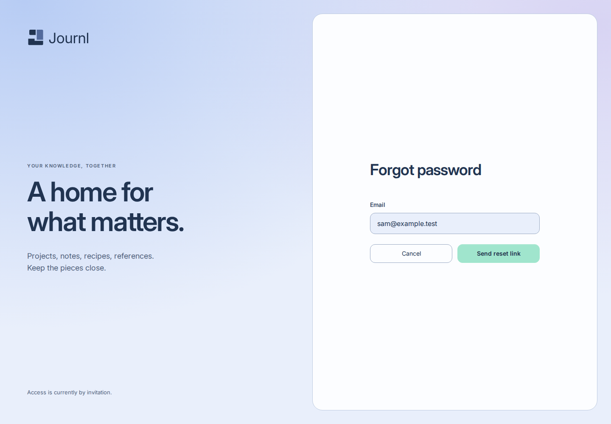
SHA256 fe5599c918ba2322d99c35dd7220f5ca933f8a735a70ca589adc6b41c2eff42f

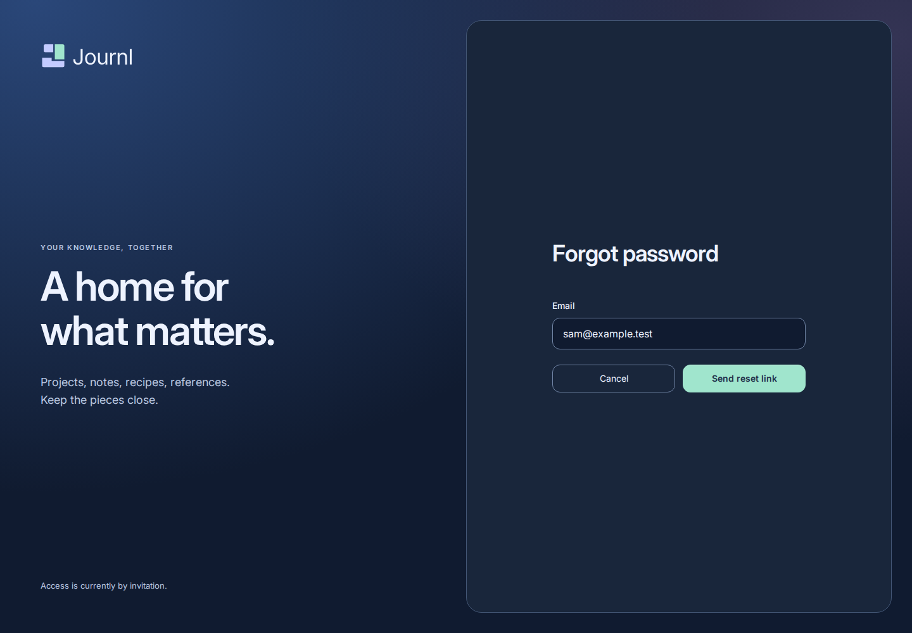
SHA256 377b5b7c638805b0e5f2c2b22dc2e2ee20e61c804132ea7af642c9498e788971

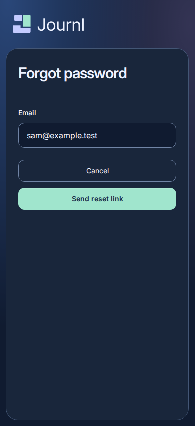
SHA256 407b4e58ba003a6edece7758ad685ff6180087e1a697922e686a3474e493a497

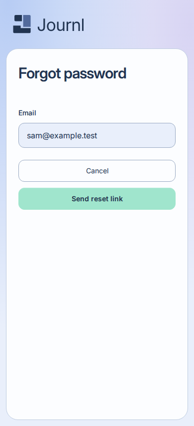
SHA256 c23a38a0eefeec27f49fe8ffecb39ef0bbfbe1fc51e4c0daedef39dbbeeeefe3
Forgot password · pending
forgot-password-pendingActions and implementation pointers
Journl · Send reset link… · Cancel
apps/web/src/components/auth/sign-in.tsxapps/web/src/components/auth/sign-up.tsxapps/web/src/components/auth/invite-code-form.tsxapps/web/src/components/auth/reset-password.tsxapps/web/src/components/auth/auth-view.tsxapps/web/src/components/auth/better-auth-provider.tsxapps/web/src/components/auth/forgot-password.tsx

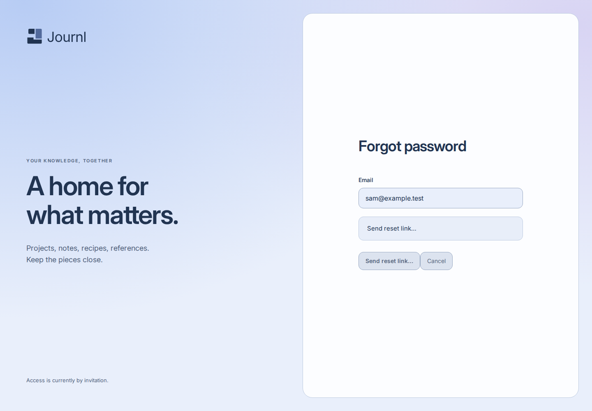
SHA256 a3bc1884fd60890ba75bdd8558c513dfe4240b39005bf6c40923b2256f53fc85

SHA256 faceb3c015b26937cfb476e2dc514c06ce2c2c5a8e1913c50189fe3461a7be0b

SHA256 5fcd7cd2f19bf1022ed13564e92e6425561f6fe4a966308d2b6deaadd12419ca

SHA256 4507f2943cc64cb8bf182a94ef2c0daeda15d929a6718f6f1348f220f7d130f6
Forgot password · error
forgot-password-errorActions and implementation pointers
Journl · Cancel · Send reset link
apps/web/src/components/auth/sign-in.tsxapps/web/src/components/auth/sign-up.tsxapps/web/src/components/auth/invite-code-form.tsxapps/web/src/components/auth/reset-password.tsxapps/web/src/components/auth/auth-view.tsxapps/web/src/components/auth/better-auth-provider.tsxapps/web/src/components/auth/forgot-password.tsx

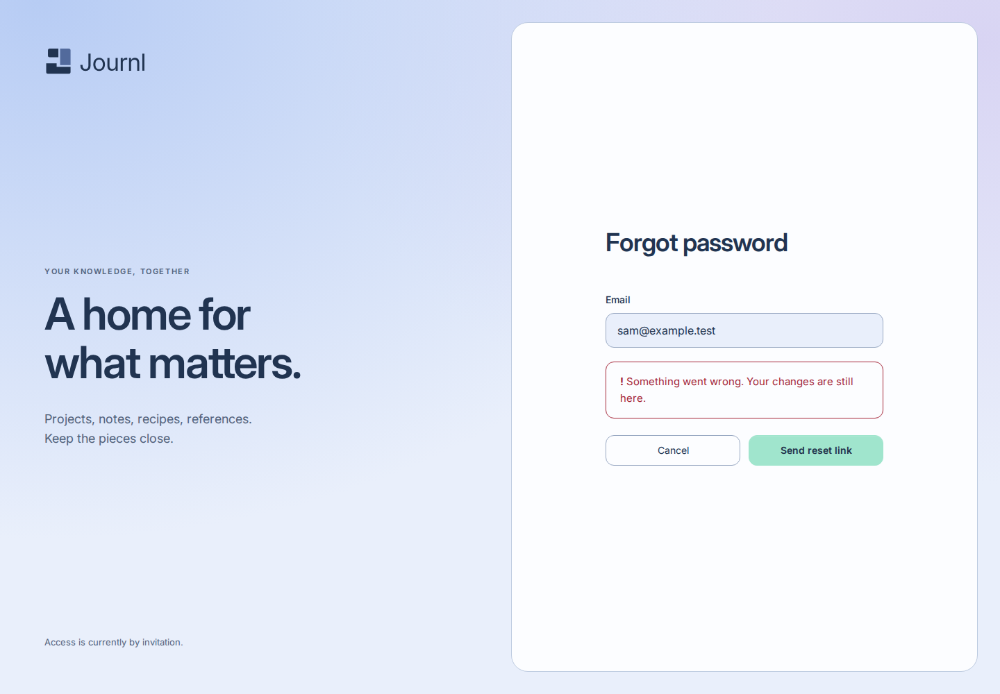
SHA256 5355131442ab651a55535601204931875590164cd5894bda26415d12a6d6e837

SHA256 47c45976af6324c5118c09d737efe884990090c93bac045005d5cff37ef069db

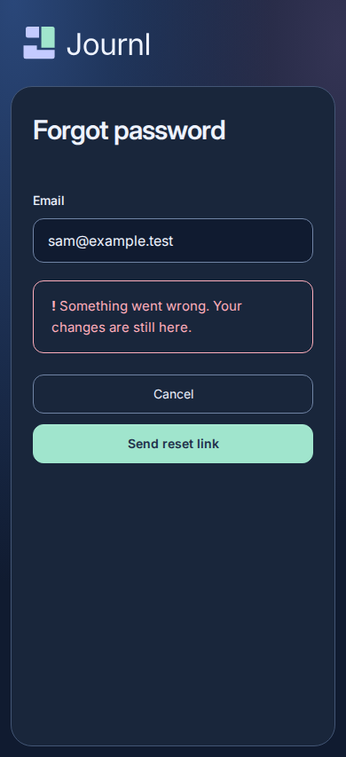
SHA256 ef1df471b710cc6342c8da9be013399af12e53649922e5ceaa15adf2d521f817

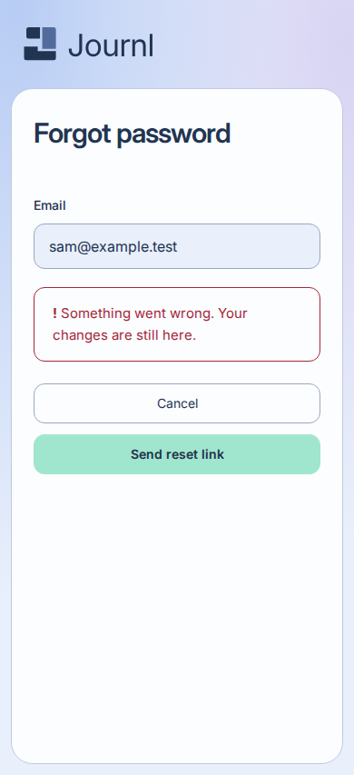
SHA256 85fabbe6fa4abcf9483b725f18012ca5739633cc988f0033da81fa3f597f5ab2
Forgot password · success
forgot-password-successActions and implementation pointers
Journl · Done
apps/web/src/components/auth/sign-in.tsxapps/web/src/components/auth/sign-up.tsxapps/web/src/components/auth/invite-code-form.tsxapps/web/src/components/auth/reset-password.tsxapps/web/src/components/auth/auth-view.tsxapps/web/src/components/auth/better-auth-provider.tsxapps/web/src/components/auth/forgot-password.tsx

SHA256 b81b085c9737c4fc42f392330882061791007257debcd604488f77fe7c78cf8b

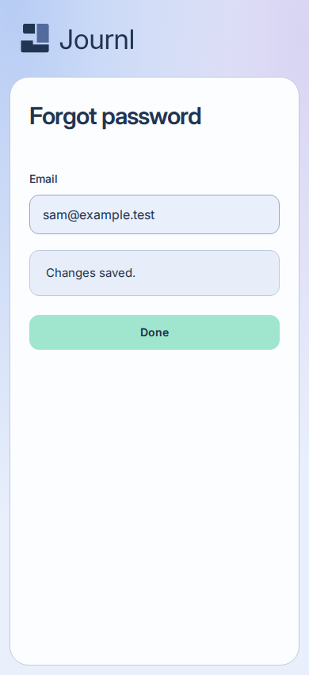
SHA256 0894bd281cbebfa1310ffd9d59adb184b422856bb295c4447dc9682c5510052f

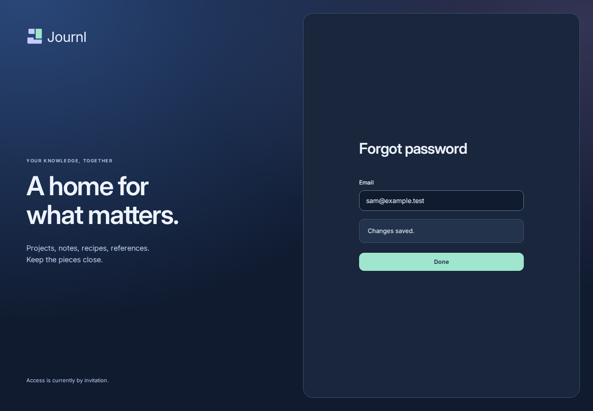
SHA256 cffdecfff92621b521a80c0d8667b0a8ec1d82aa45bb11da430891ef5941aa3b

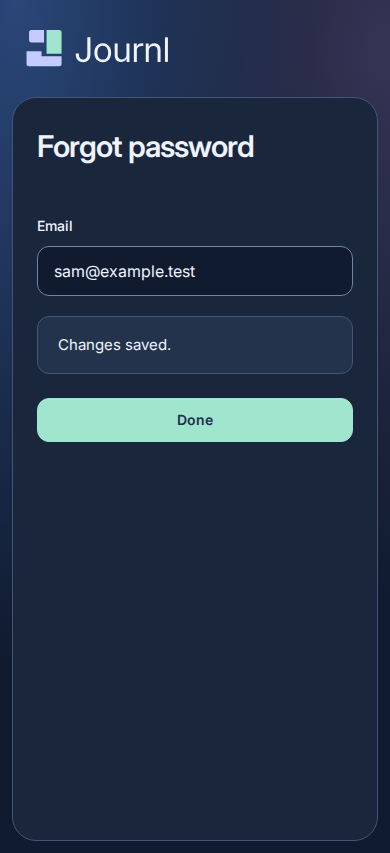
SHA256 06b809efce2021513dcba47066875bb2d97adcddb08b383225b394d969d9140f
Reset password · visible
reset-visibleActions and implementation pointers
Journl · Show passwords · Request another link · Reset password
apps/web/src/components/auth/sign-in.tsxapps/web/src/components/auth/sign-up.tsxapps/web/src/components/auth/invite-code-form.tsxapps/web/src/components/auth/reset-password.tsxapps/web/src/components/auth/auth-view.tsxapps/web/src/components/auth/better-auth-provider.tsx

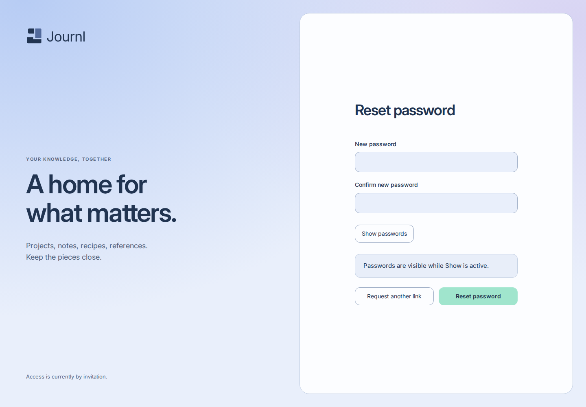
SHA256 acfc103d579bbb712ee2e7283c7ba69cbdc46b850f83615379f138792a778cb8

SHA256 327cab1fac32e3a760c26808e9a889ea31953572dd6095206e6c027e39ba6665

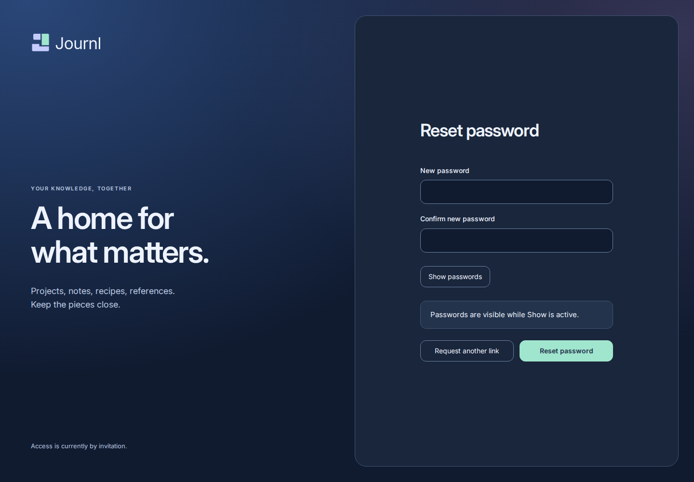
SHA256 dab369f865737296daa658d17380e5037bda039ffb213e5dcb4bf0da3503f57f

SHA256 1fa8d860c0699359920316c258180c02348ff3548e22a4a648a9893b5e8a1ddc